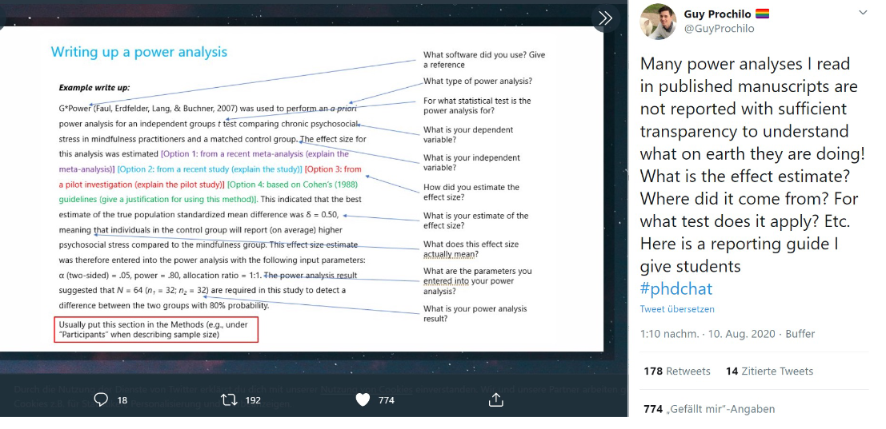
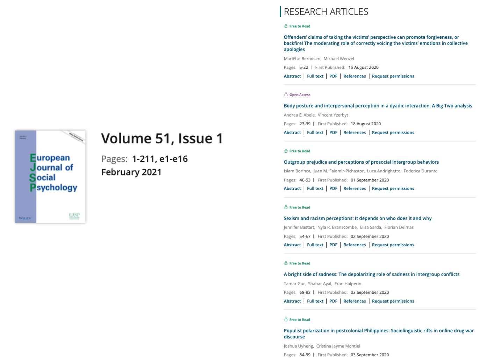
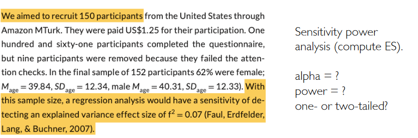
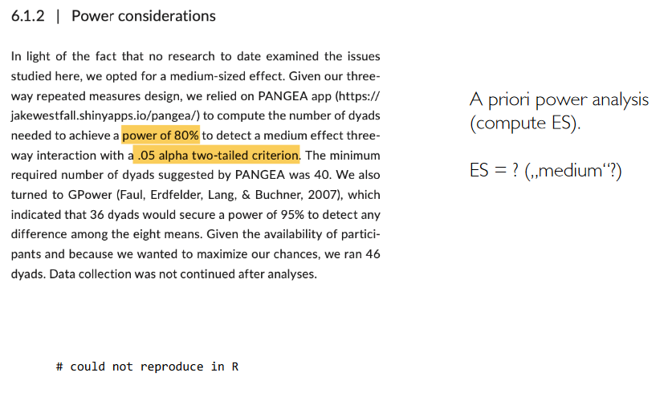
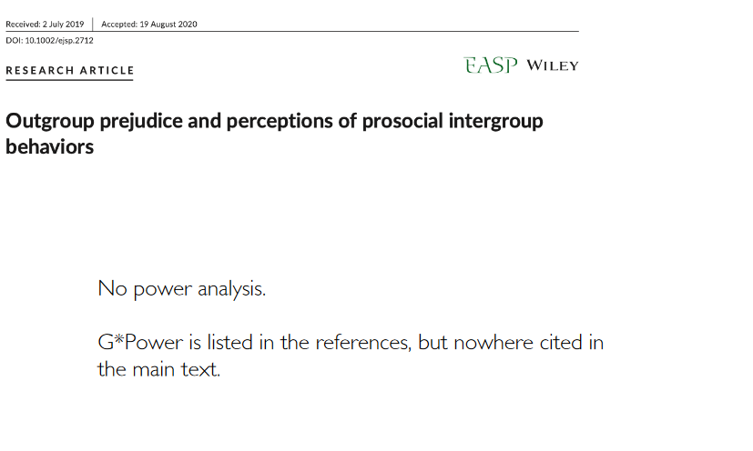
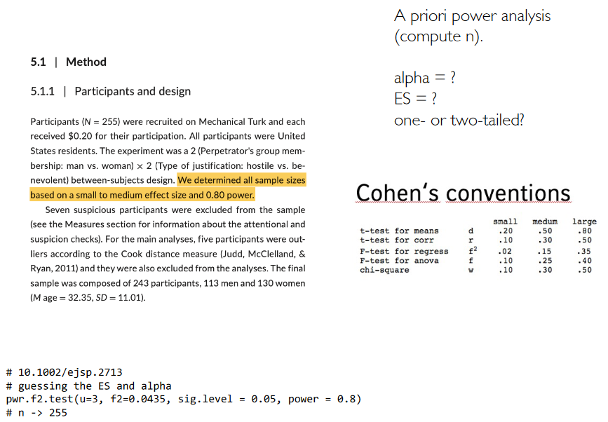
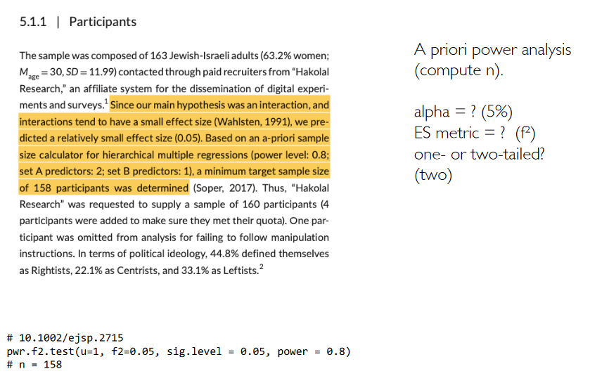
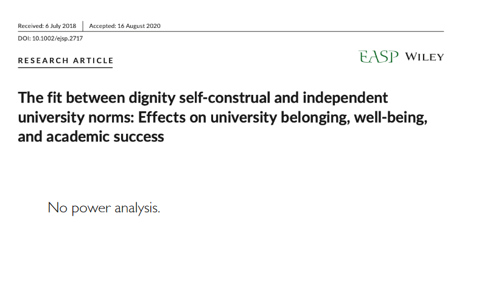

![]()
# 10.1002/ejsp.2710: f2 = 0.07
# u: Anzahl der Prädiktoren im Modell (ohne Intercept). Hier vermutlich 3.
# n = v + u + 1; v = n- u - 1
pwr.f2.test(u = 3, v = 152-3-1, sig.level = 0.05, power = 0.8)
# -> f2 = 0.07366273How to report a power analysis
Reproducibility & Justification
A well reported power analysis means:
- Minimum: Anybody can reproduce the computations (without ambiguities and guessing), and get to the same result.
- Optimal: Key choices are justified. Most importantly: the assumed effect size. But also: Why α=5% Why power = 80%?
What information do you need to compute a power analysis?
- Type of power analysis:
- A priori: compute N, given alpha, power, ES
- Post-hoc: compute power, given alpha, N, ES
- Criterion: compute alpha, given power, ES, N
- Sensitivity: compute ES, given alpha, power, N
- Design: Correlations? t-test? Two-group or paired? Linear model?
- α = .05? .005?
- Power = 80%?
- One-sided or two-sided test?
- Expected / Minimally interesting effect size -The metric of the effect size (d? r? f²?)
Write-Up


Example 1

Examlpe 2

Example 3

Example 4

# 10.1002/ejsp.2713
# guessing the ES and alpha
pwr.f2.test(u=3, f2=0.0435, sig.level = 0.05, power = 0.8)
# n -> 255Example 5

# 10.1002/ejsp.2715
pwr.f2.test(u=1, f2=0.05, sig.level = 0.05, power = 0.8)
# n = 158Example 6

End
Contact
- @nicebread@scicomm.xyz
- ed.uml.ysp@tdorbneohcs.xilef
- https://www.nicebread.de
- https://github.com/nicebread